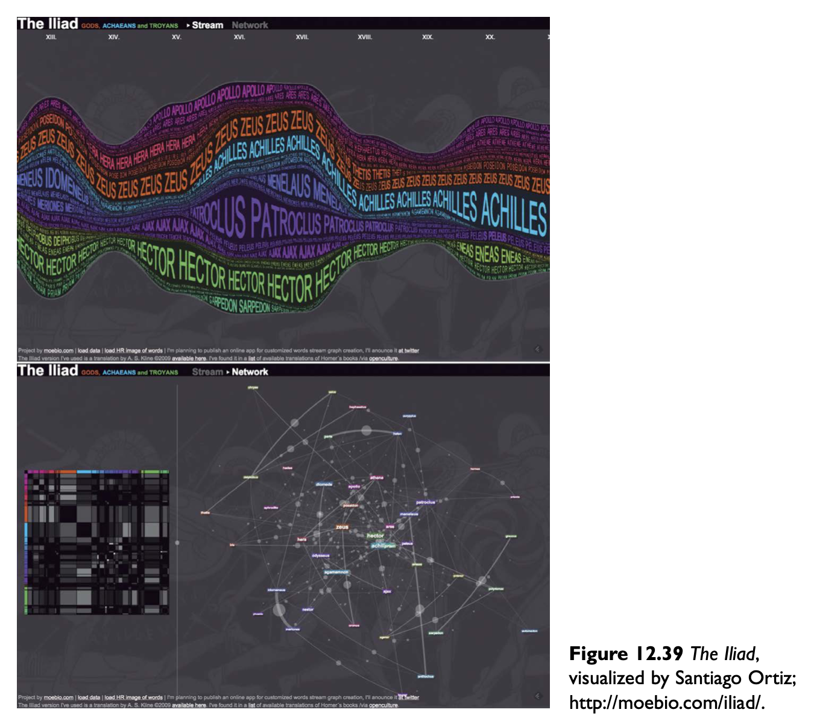

Vizualization as a tool
The following books are the source material for these entries, accompanied by other recommended articles that are referenced at the end of this page. Note: The chapters within are from the recommended outline of suggested material by Professor Cairo for the course.
The Functional Art
How Charts Lie

The Truthful Art
BLOG ENTRY #10 | Apr. 6, 2020 | "The Functional Art", Chapter 9: The Rise of Interactive Graphics, and Profile: 6, Geoff McGhee, "Visualization in Academia"
Still pretty recent to the news reporting scene in just around the early 2000s is the online or digital interactive graphics. The introduction of buttons and play function operations instead of static paper had caught the attention and interest of professionals and audiences alike. It was a pioneering age in which designers interestd in entering interactive news infographics needed to figure out, by trial and error, how to tell stories in a different way, while adapting their skill set to learn programming, audio tools, 3D animation and more. Many were not informed in the traditional heuristics of human computer interaction (HCI) or software engineering rules. For newcomers to the topic, it helps to learn the basic mechanics, as in "The Design of Everyday Things," by Norman, teaches about interaction design, such as basic door open and close function, are ways that humans interact with their environments, and apply those concepts to interacting with objects online. A main point is to put "the user's needs ahead of the designer's aesthetic concerns," and rings true to great design, whether in physical world, print, interactive methods, or any level of expertise.
Consider the image above, an interactive graphic, and together we will notice the key elements of interactive design principles that it employs. The main point is to consider the functional aspect, and the person engaging will notice what they can get from that interaction. By highlighting key elements, the user experience will be heightened. The key ways to do this according to Norman are by practicing principles of visiblity, feedback, constraints, and consistency. In the graphic above, notice the visibility of "perceived affordances," such as where the actions a user can take are clear, for example in the scroll interaction above, it is visibly suggested that by dragging the point on the bar will illicit a reaction. In response to that, the feedback element comes into play, where something will change in the environment of the information visualization as per that action. The practice of offering the user "a visual cue, a subtle sound [...], or a response that appears instantly on screen". Next, we tune into constrains, where "a designer consciously imposes limits" and the scroll bar, we notice there is a maximum end where "you can only manipulate it up to a point and in one direction, vertical or horizontal." Finally, consistency is key, and we notice the arrows in the example all have an inherent function, such as they are not mixed in with being design elements, which would be a usability issue if they have the same appearance. These key points will make for a great design.
Applying these principles is what experts in the field, such as Geoff McGhee works on to bridge the advances in academia to the professional world. Consider the interactive information visualization above, where the entire Library of Congress is translated into a timeline of newspapers across the United States. This makes an inaccessible tool to the common individual available in a friendly and non-barrier type of manner, a true innovative leap thanks to the web and interactive data advancements. Imagine having to search a long page of newspaper links, instead of this inuitive map that can be navigated based on region, or other criteria that the tool allows. Many news sources and people of the world would benefit from more information available to present and explore in this manner. Consider how the media world has to produce so quickly, and for the most part doesn't have the same research and innovation such as academic institution. McGhee says, "When you are in media, you are aware of the many innovations that are being developed in academia—new tools, new techniques, new practices — but you don’t usually have direct access to them." Back in the early 2000s, after working in the professional world, McGhee realized the need for innovation where instead of transmitting data in static images, these should be somewhat databases that last on the web for much time and reference due to all the work it takes to produce. Many in the industry find a need to bring a more human element to data sharing, and this is what interactive graphics aim to continue developing. Through the use of these emerging technologies, more intiutive data is being programmed into the digital realm, thus gaining a consciousness of our own human element. Just imagine what another 20 years from now will bring to the interactive landscape.
BLOG ENTRY #9 | Mar. 30, 2020 | "The Functional Art", Chapter 8: Creating Information Graphics, and Profile: Steve Duenes and Xaquín G.V., "All the Infographics That Are Fit to Print"
While there is an abundance of designers, being a good storyteller through design is another story... the key is knowing how to reduce information without mistakenly removing too much information that may "unintentionally oversimplify, obscure, or warp the author’s intended narrative, instead of bringing it into focus," says Reif Larsen, from “This Chart Is a Lonely Hunter: The Narrative Eros of the Infographic”. Taking the right steps to making a successful infographic or information visualization in the professional world takes a variety of skills, and with thorough research and planning, the true matter does remain that "the real lessons come as the graphic is created, in the problems that must be solved and the decisions made along the way."
One of the best pieces of advice that any designer can take is to organize their layout in sections, such as in the image above. After collecting research and data, the main ideas are best to be laid out in key points, with some filler ideas as placeholder for your original content. By providing a fundamental grid to lay out the main ideas of the graphic will help fill in the final information much easier, while sticking to what are the most important elements, and working more entirely on the featured key data points in order of importance. After having this sketch and draft of your idea beforehand, then adding the more concrete computer version makes it easier to complete the visual graphic and fine tune color and text. Preparation is key, and "you need to build a solid backbone for your information, a reading path, an order, and a hierarchy, before you lock yourself into a style for your display. The structure is the skeleton and muscles of your graphic; the visual style is the skin. With no bones to support it, the skin of your project will collapse."
To accurately pursue stories from beginning to end, and be able to respond to the urgent times, such as the Virginia Tech shootings, in April 2007, is what each member of the New York Times graphic design team aims to be capable of. Interview with Steve Duenes, lead graphic director, and one of the teammates on the floor, Xaquín G.V., graphic editor, give us insight into the camaraderie but also personal independence that each member of the team hold in regard to their journalism profession at The New York Times. As per organizing structure of an infographic and story from A-Z, these members of The New York Times do it all, as each one in their own right is a good journalist, and aim to go after their own stories from conception to execution. While everyone may not be the best at every craft, ranging from CGI to webite integration or UI, a team is necessary, and a common thread between all the individuals in this team is the element of curiosity, in which these stories carry weight and meaning in a journalism context, and help each other with supporting feedback and skills to make the best project possible. This team doesn't operate like other news publications that exist with independent departments, separating journalists from art creatives. Instead, they aim to "report and present the content ourselves."
BLOG ENTRY #8 | Mar. 23, 2020 | "The Functional Art", Introduction, and Profile 1: John Grimwade, "The Infographics Gentleman"
Data communicators need to understand the difference between the two terms, infographics and information visualization. A graphic designer without any prior knowledge could infer that an infographic is a graphic of information, therefore any graphic that that makes information into a visual art, but doens't this sound like information visualization? It may seem pretty tricky. The main difference is that an infographic is simply data presented in some form, i.e. map, chart or diagram and communicates the story of the designer, as in the photo below. Whereas, information visualization allows for exploration and analysis where the reader discovers their own story. Helping to understand the difference can help designers decide which kind of effect they want to share with the world.

Both of these terms still overlap, as "all graphics present data and allow a certain degree of exploration of those same data." The difference is the amount of each - between presentation and exploration - that a graphic has, and falls into the term of the greater amount. This also depends on the manner in which the audience "reads" the graphic. These visuals are meant to be read and interpeted within the understanding of the visual brain, and not just meant to be looked at. These graphics must be understandable before beautiful, and as a means to clarifying more understanding, beauty may arise further. Therefore, a visualization is similar to being read as in journalism, yet also to be interpeted through visual appeal, as in art, leaning towards this craft being termed "functional art".

Take for example the image above, designed by John Grimwade, whose style may be summed up in this interview line, "we should strive for clarity because we are an interface between a chaotic world of information and the user who wants to understand something." The key element of this quote, that the reader wants to be engaged and wants to be influenced, is beautiful. For a moment, the viewer can make sense of something in a way that they feel they are revealing it to themselves. This is a key element of information visualization, and Grimwade masters it in such a simply sophisticated manner. And this is true for designers everywhere, it is harder for a design to look effortless, because it means it has been groomed over incessantly through every pixel until it is succint enough to communicate the entirety of the message. "Our main goal should be to tell a story clearly by achieving order and having some sort of narrative through each graphic. Any project should start by analyzing what your story is about and then finding the best way to tell it by splitting it up into easily digestible chunks, without losing depth." This advice is golden, and exactly what information visualization is all about.
BLOG ENTRY #7 | Mar. 16, 2020 | "The Truthful Art", Chapter 12: On Creativity and Innovation | "The Functional Art", Profile 2: Juan Velasco and Fernando Baptista, "Information Art"
In order to break the rules, one has to first know the rules. That's where innovation becomes a possibility. Think of the greatest minds of art, business, and leadership. Their story usually begins by persistent repitition of their diligence, and a unique obsession. The all-consuming thinking on that repeated action eventually ignites next level insight into a better level of operation. Once at this level, their understanding is much more in depth, and "to the untrained eye" it may appear very complex and unable to be read at a glance. Many journalists and designers expect visualization to be easy to interpret quicky, but it is meant "to be read, like written text," and has "grammar and vocabulary" of it's very own. The nomads of the designers dare to manipulate the standard rules into a creative expression that follows its own new set of rules. "Progress is not possible without deviation. It is important that people be aware of some of the creative ways in which some of their fellow men are deviating from the norm. In some instances, they might find these deviations inspiring and might suggest further deviations which might cause progress," says Frank Zappa, TinyURL.com. In collaboration of minds, as the ability to perceive the same subject through different perspectives, allows for especially interesting work to arrive. When we see two individuals working on the same subject, we see that normal for one person is different for another, and working in tangent, the ability to notice unique qualities in one's inherent approach also reveals opportunity for revelation. For instance, the 52 week postcard project named "Dear Data" by Stefanie Posavec and Giorgia Lupi shows the power of perspective. Take a moment to appreciate how these two individuals used the same tool, a postcard size canvas, to approach the same subject, in this case, doors they passed through in a week, by expressing their data in different approaches for quantification and definition, i.e. "grammar and vocabulary".
"Everything is 'edgy'”' today; everyone’s creative or an innovator or an innovative creator who thinks outside the box.", William Deresiewicz, “Excellent Sheep”. This quote holds very real in today's social media age, where every person in an 'influencer'. True influencers in the data field have facts to back it up, as per data in numbers, where that is very stable and as my grandfather says, "Numbers is the language everyone in the world understands," Abuelo Valdes. Yet the difference between data designers is how they present these standard numbers into a unique artistic form that is remarkable for readibility, enjoyment, and / or purpose to make an effect on the reader. As per a necessary cliché mentioned in the book, "You cannot think “out of the box” if you don’t know really well what the inside of the box looks like," is a fact that we must remember from time to time. All humans must humble themselves to return faithfully to their practice and continue to learn within their box, as it is only then that they will expand beyond the confinements of their box. A bit of a paradox, yet in consistency also lies freedom. Take Santiago Otiz, quoted for being "one of the most forward-thinking minds in visualization", is a mathematician, designer, and coder... talk about repetition within their box of skills. Within that confinement of his craft, he found an innovative "sometimes bizarre and crazy, but always suggestive" portfolio of projects, for example, The Iliad.
Together with innovation, there are experts in the field that employ unique tactics that some would say are innovative approaches. Nowadays graphic designers think everything computer, but for an expert at the National Geographic, Fernando Bautista, is after the real precision done with an ancient-type of material -- clay. Using clay to analyze and manipulate proportions and structure of an animal, or the featured project on the Turkish Göbekli Tepe, is a unique approach, given that the final outcome is highly accurate and impresionable. Sometimes older methods actually may turn out to be fresh methods put into practice in the modern age. He says, "I feel more comfortable working with an actual object that I can manipulate with my hands, rather than on a computer screen." In addition, he says it's quicker to work with, and the model can be rotated to determine the best angle for the magazine spread - a pretty unique method to use today. The image of the temple in the maazine is the clay model itself, using Photoshop to add textures to the surface, while maintining the landscape and people within the means of highly accurate detail true to data backed by experts. These approaches make work stand out among the rest, while adding the value of true artistry to factual data.

BLOG ENTRY #6 | Mar. 9, 2020 | "The Truthful Art", Chapter 10: Mapping Data | "The Functional Art", Profile 10: Stefanie Posavec, "Visualizing Literature"
While using precise data to create data maps it is difficult for the human mind to actually perceive very accurate judgements in relation to size. Interpreters can't estimate relative sizes very well, even if objects are proportionally sized among eachother. This circumstance that troubles cartographers is likely explained by the Ebbinghaus illusion, where two circles are the same size as the center of a flower, for example, yet the size of the petals being bigger or smaller, also makes the middle circle look bigger or smaller. It serves as a peculiar lesson on proportion to illustrate the flaws in map reading by viewers.
Several different map layouts need to be considered in order to help readers interpret the data properly in terms of size and proportion. For example, circles in a proportional symbol map, or squares such as in a cartogram, both use area, and therefore need to address readability issues by adjusting transparency or scale size in order to minimize clutter. In order to help the reader interpret proportion, a scale providing the largest circle or highest value, scaled down to the smallest circle or lowest value, and then filling in the scale between them is used. The scale legend provides a guide of consistent increments in value to help interpret the map with more clarity. In addition, by using a second variable layer in the map design, such as shading, it will help in a multivariate scope by giving the reader more tools to discern. The cartogram image below is a proportional symbol map using area and the multivariate application of shade. Different tools and variables within maps have to be employed by the designer on a per project basis, as per the data to represent accurately will require intutitive fine tuning.

Take the work of data illustrator, Stefanie Posavec, who likes to refer to herself in the more artistic expression of the craft. She has focused on creating visual embodiments of data aggregated by a hands-on method rather than using computer automations. She has focused on using language as the data subject, and thus breaking it down in to a systematic data organism by themes, sentences, or paragraphs and representing it in colors, lines and playful pieces. One of the works she has organized involved dissecting "On The Road," by Jack Kerouac, and breaking it down into themes, and using each word as a metric. "So I ended up counting all the words one by one, and sorting them by key themes. I spent a lot of time going through the book and highlighting different sections." She feels the natural bond with her work is the key to "awe and inspire" in others, and serves as a benefit to not automating her process. Her representation of the novel in a consciously crafted "Literary Organism", which she wanted to connect to how books are alike and cellular as are plants and animals, and aims aims to make her viewers think differently about the book. We can take from Prosavec that proportional scale maps can be viewed not only in circles and squares, but also lines, and whether expressed in a cartogram or a literary organism as in the example below, the structure of a data visualization can help bring engligtenment to the viewer depending on the arrangement and multivariate levels within the design.
BLOG ENTRY #5 | Mar. 2, 2020 | "The Truthful Art", Chapter 5: Basic Principles of Visualization | "The Functional Art", Profile 8: Moritz Stefaner, "Truth and Beauty Operator"
It is tricky to visualize data, even when you know which tasks you want to accomplish. You may have all the concise data in front of you, and the ability to create the graphs using tools such as iNZight or RAWGraphs, yet still not be able to create a clear visualization to convey your message. It is difficult and requires much time to make your story readable with charts instead of words. The book suggests, "Plot what you need to plot. And if you don’t know what it is that you need to plot yet, plot many features of your data until the stories they may hide rise up." It is common practice among data designers, both newbie and experienced alike, to enter the data multiple times in different plot forms, switching x and y positions, and continuing to attempt several different types of charts, and many versions of the same charts, until you can see that the data makes sense from a comfortable glance. The idea is to make it friendly and easy for your readers, that is the goal where you know to have done a good job. There are tools, however, to help prompt designers in making better plotting choices from the beginning of their data drafting.
These tools, such as the photo above, which is a version of Cleveland and McGill's "Scale of elementary perceptual tasks", help guide data graphic designers in visual accuracy choices. The authors of the scale above tested it in several experiments specifically for statistical data, and found that a typical reader can more easily perceive the information in the graphs positioned higher up on the scale, such as those using position, as the most accurate estimates in readibility. The graphs lower on the scale above, such as color hue and shading, are better employed for general data estimates. "The conclusion was that if you wish to create a successful chart, you need to construct it based on elementary tasks 'as high in the hierarchy as possible.'" This tool is a helpful indicator, however there are exceptions in accuracy given the context, for example, "data maps" belong to the lower part of the scale by using color hue and shading, however it depicts generally accurate data in that map context, which is highly accurate in its own right. New designers can use this scale as a reference to maneuver the level of accuracy and chart types while they lay a foundation to meet their overall goals.

While accuracy is crucial, balancing it with attractiveness is a skill that few professionals conquer in their own style. Moritz Stefaner brings truth and beauty to his projects, and reveals in the photo above his scientific approach to design, which later in the process allows for artistic creativity to develop. By implementing his cognitive science background, Stefaner guides himself through the steps above (image) in order to work diligently and goal-oriented while artisically with clients. Stefaner asks the client's goals, explores and sketches, and finds that sometimes the data the client thinks they have is in fact different from their perceptions. The first two steps in the process are intricately worked through to assess a solid foundation. By delving into the data available, making rough sketches, and considering the goals, the dozens of iterations of the drafts are proposed and mulled over to reach a truth point. From those conclusions of truth, then the project is actually defined on solid basis, and produced in consideration with visual appeal, i.e. beauty that makes sense. Based on the fleshed out research and goals, Stefaner is able to provide an end-point for his project, where analysis of results based on the primary goals can be assessed. The data science artist suggests to new designers, "I would recommend to get used to producing 10 to 20 different solutions to each challenge, to draw many sketches for any project. You need to be honest about which ones work and which ones don’t. Don’t be afraid to fail. Sometimes you’ll have a good hunch in the beginning, but more often you will need to look at many different variations of how to present the data using the right graphic forms. That’s the other crucial component to be successful in this business: You need to design a lot to become a good designer." This is comforting to a new designer, as per when the data in front seems to be all there, yet the visualization still doesn't come to light after a handful of attempts, it is necessary to keep revisiting the drafts from different perspectives and illustrations until the picture becomes clear.
BLOG ENTRY #4 | FEB. 24, 2020 | "The Truthful Art", Chapter 2: The Five Qualities of Great Visualizations | Article: "Ethical Infographics", Alberto Cairo
In considering the five great qualities of visualisation, those being: truthful, functional, beautiful, insightful, and enlightening, I would argue that the most important, if any other did not have to exist, would be that of "insight." The category of insight somewhat alone may encompass the entirety of the five great qualities. When something is insightful, it cuts through the fat, and presents an non-obvious reality, a level deeper than the superficial, which makes it in fact that very definition of beauty and truth, and provides simultaneously that of function and enlightenment by supplying a need, all in one.
To consider one of the most famous charts in history, "The Hockey Stick Chart," where a magnanimous amount of data is represented in a 3x4 simple visualization that shows a spike in significant data. It may not be beautiful, but the beauty of the simple truth it illustrates provides deep insight over thousands of years and enlightenment at the effect of a spike in warm temperature in the most recent 20-21st century. It is difficult to ignore the data it shines a light on, that the earth is indeed getting warmer, and due to the accuracy of technology in more recent centuries, the reality instead of argument provides truth. This is the power of a commitment to truth, where the ability to collect a single point of data per day adds up to significant change over time. The field of data visualization is much like life, where with the onset of a new day, a new cell of data is stored, and it results in the culmination of something real, something that has been and can't be erased, something that has meaning and results in magnificence.

Together with providing insight is providing that expected simplicity of the facts. The ethical responsibility of journalists is to not only provide the written word in verified statements, but also to illustrate them honestly and accurately. Compare the same data on the following graphs below. We notice the data presented has only one numerical data point for the readers to infer the other missing values and compare the data across the chart. It is easy to visualize using the bar chart, yet difficult to assess the difference in area in using circular graph displays. Making the distinction for the proper use case between linear (height and width) over area, which is harder to visualize, is crucial to ethical communication of the data.

BLOG ENTRY #3 | FEB. 17, 2020 | "The Truthful Art", Chapter 1: What We Talk About When We Talk About Visualization
What does "data viz" and "infographics" — the title of this course — even mean? In plain, a visualization is anything that can communicate a message through visual methods. Therefore, data visualization is exactly just data that is visualized in a means for communicating the quantities or symbols for inference by the receiver. Under these data visualization terms are charts, plots, diagrams, graphs and others of the like, which may be interchangeably used depending on the context of the author. Additionally, a map is simply the same a plot or a graph, in which the coordinates of longitude and latitude determine the boundaries of the data within that region. These data visualization methods are well known for formatting with a Cartesian coordinate system, using a unique point in a plane by a set of coordinates, and differs from infographics in this aspect of pointed accuracy.
Infographics differ from data visualizations as it provides a multi-layered view of information in order to communicate different aspects of the same message. Using a mix of data visualizations with illustrations and text or sound, it pvoides relevant information for the cohesive point of the author's purpose. These infographics tend to provide an increased visual appeal with the primary goal to make the general reader more informed in clear and simple illustratated narrative with supporting data. It is important for the author of these data visualizations and infographics to leave space in their work for the reader to determine their own conclusions in regards to the story provided in front of them. While the author has the job to provide the facts in a clear communication piece, the reader is ultimately responsible to use their work as a tool to make their own inferences from the provided narrative.
BLOG ENTRY #2 | JAN. 28, 2020 | "The Truthful Art", Introduction: The Island of Knowledge and The Shoreline of Wonder | Article: "Finding the Right Color Palettes for Data Visualizations", Graphiq
The staggering effect of the media democratized in today's social landscape has altogether changed the vehicle for "news". What once was fact-checked and worked thoroughly for high reliability using "The Elements of Journalism" is now overpowered by the fast-paced online media commerce of influencer opinion. These "verified" (blue checkmark) source accounts are in their position for a reason, they share relevant information, and that "reach" that they have determines what makes "headlines." Nowadays, headlines are actually just the captions under a photo on Instagram and determined as valid according to the number of "likes" on the post. This is what our current democratized news system looks like, which is a bit of an extreme statement, because our foundational news institutions still exist and continue, but nevertheless this situation of distorted news digestion remains true for milennials who don't engage with traditional news. The graph below is a result of this environment, where public relation tactics of likeability, visibility, and engagement are prioritized.

As mentioned in the book, “News is a report of what a news organization has recently learned about matters of some significance or interest to the specific community that news organization serves," Jack Fuller, ex-president and publisher of the Chicago Tribune. To a great extent, that definition is what most online influencers achieve very well. To garner such popularity, they provide value to their users, and success as a result of a unique selling point, or unique creative method on their account, i.e. imagery, tone of voice, consistency, message. These influencers are people that have the power to make it a trend to include more news-worthy information. Some do by only sharing the most notorious disasters online, which become "viral" and "meme-worthy". But if they were aware of the importance that visualized data can help the regular citizen make more informed decisions in the longterm, then maybe they may realize their role has put real reporters out of jobs, and it is their responsibility to share some real facts in return for their online clout; a "Golden Rule of Social Media" to complement "The Elements of Journalism". Potentially more awareness of this need to receive facts from influencers can lead their followers, and us as a collective, to see beyond the present of immediate gratification, and begin to digest more informative materials towards a more determined future.
These influencers can also provide visually appealing demonstrations by using best color practices that compliment their brand, make it more accessible, and provide an online tribute to the natural world through color. By informing influencers of accessiblity towards people with color blindness, they may consider how hues and brightness make an effect on these users. To consider this accessibility can make the current "data" they share more relevant to all types of people. The idea of using scenes of nature to create gradual color patterns is a skillful tool that many influencers would benefit from implementing in their practice. Applying these color practices to data in visual solutions can make it more diverse and engaging, while discerning for all users. Maybe if journalists and news organizations provided influencers with data such as this color palette information to better their online presence, then these online bloggers can be requested in return to share factual information. Potentially each news organization can partner with local influencers and make it part of the news room agenda to get their data visualizations and infographics on social media pages. Much important information gets lost on traditional media, and influencers can help make it more relevant, especially with the help of news reporters, and a rapport can begin to make the social media craze a bit more ethical.
BLOG ENTRY #1 | JAN. 21, 2020 | "How Charts Lie", Introduction, Chapter 1: How Charts Work
As a University of Miami graduate with a bachelors in public relations, marketing and psychology, and current pursuant of an interactive media masters degree, I relate very well towards manipulating "data" or communication in words and images in a highly curated aspect for the intended audience. Whether it is a pitch for an article to a news publication, or a advertising piece to market a product, or a website designed to make a sale, it is always a somewhat altered version of the overall encompassing data in order to garner attention, engagement, or persuasion of the target user. Overall clarity of key components of the facts behind the visualization can be crucial to not lying to the target reader, for example in the illustration below.
The map is represented in two versions above. The first is a standard map, colored by state with majority of Democratic votes, however it is not that it lies, moreover, it is not as clear as the second version makes known of the facts. The second chart separates each state by number of electoral votes, which in fact is how Trump won the presidency, even through Clinton won the popular vote. Making clear the data in this improved manner helps the reader immensely. The author of teh chart is able to tell parts of the story, and may or may not tell the entire story. It is up to the designer to tell the story as accurately as possible while remaining truthful and allowing the users to fill in the gaps with questions or their own ideas. As in marketing, curiosity is important, and giving the user space to look for more information on their own is a good strategy, as is providing clear supporting text in paragraph or emphasized text in a visually appealing manner to provide clarity and an overall sense of the message.
The idea that we have been misled since childhood in the overgeneralized teaching point that charts must be easy to read from a quick first glance has been my mental construct, and the same for a majority of my generation, if I may. If a chart seems a bit more complex than a first glance view, I perceive it is out of my league and move on. This mental construct has not been to pay more attention to it, but rather to decide that it simply wasn't meant for me. It is outrageous how the news media has used this tactic to lead us to biased conclusions. However, it is empowering to learn that given the proper indicators, and if good design is applied, then most graphs can be accurately deciphered. Also, approaching these data visualizations almost as if engaging in a brain challenge game, or as if solving a critical thinking problem, may help us confront them as better armed for battle. For example, a new artillery trick is to mentally separate the quadrants of a chart and define what is going on in each section. It will be easier to beat these brain games by learning these types of tools, while also knowing that I am engaging in a critical thinking exercise will help it be more approachable in regards to time and effort required. By having a new point of view towards charts as brain games, and becoming prepared with tools to win, the brain will begin to get stronger by forging new connections and leaning towards newer mental constructs.
Additional References
- Ethical InfographicsCairo, Alberto. Investigative Reporters and Editors, Inc. The IRE Journal.
- Finding the Right Color Palettes for Data VisualizationsZhang, Samantha. Design Lead, Graphiq.